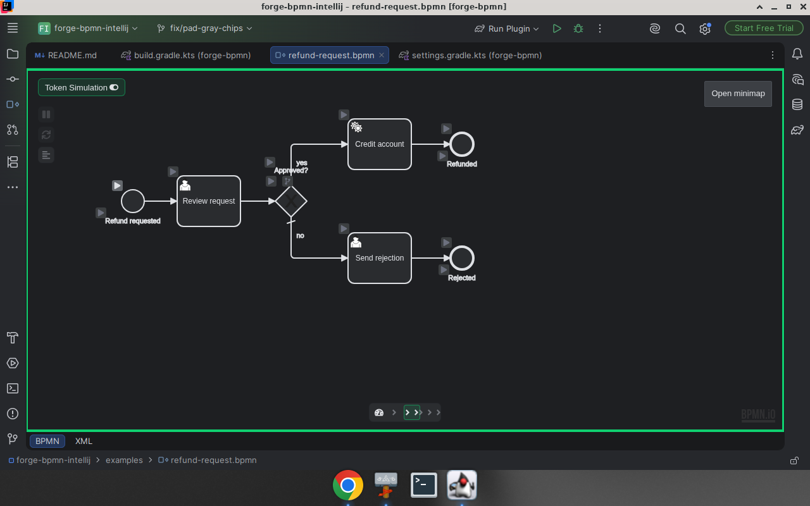
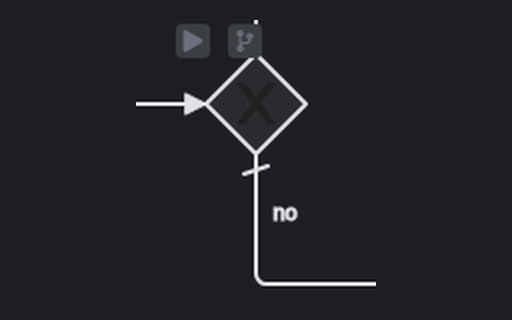
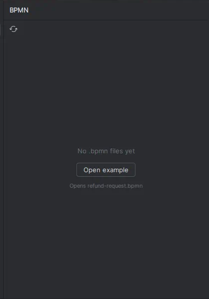

Diagram canvas
Camunda Cloud bpmn-js modeler with palette, context pad, and properties panel.
Open .bpmn files in a Camunda Modeler–style canvas with properties,
XML round-trip, Token Simulation, and a dedicated Explorer — aligned with the New UI.
Camunda Cloud bpmn-js modeler with palette, context pad, and properties panel.
Native editor tabs with automatic round-trip sync through the IntelliJ document.
Quiet New UI gray chips for play / route selection — no loud green pads.
Light and Dark follow the IDE, including canvas and chrome tokens.
Tool window lists project .bpmn files with an Open example empty state.
Annotator + inspection for well-formed XML, events, duplicate ids, and more.



Double-click any .bpmn file, or use the BPMN tool window to browse and open.
Use the BPMN tab for the modeler, or XML for the source. Edits sync both ways.
Turn on Token Simulation from the editor toolbar. Use the gray chips to start, pause, and choose gateway routes.
In the BPMN Explorer empty state, click Open example to materialize examples/refund-request.bpmn.
Search Forge BPMN in Settings → Plugins, or install from the JetBrains Marketplace listing.
Download a release zip → Settings → Plugins → ⚙️ → Install Plugin from Disk.
Clone the repo, open in IntelliJ, run Run Plugin. See INSTALL.md.